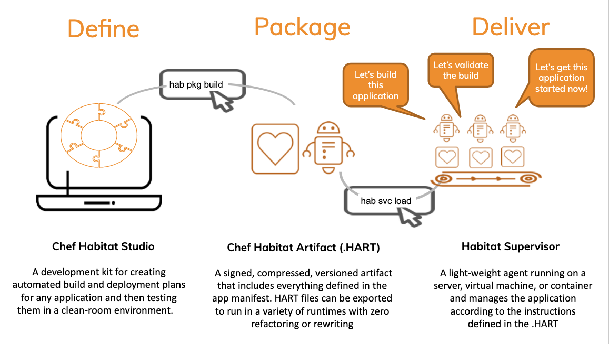

02 - Habitat Workflow

The process of automating applications with Chef Habitat can be roughly divided into three phases: Define, Package, and Deliver.
Define
With Habitat, a plan declares how the the application should be packaged, delivered, and managed. This information lives alongside your codebase so it can be version-controlled and collaborated on. It also acts as a source-of-truth for how the application should behave throughout its lifecycle. Application definitions are written and tested in the Habitat Studio, a cleanroom environment for dependency management.
Package
Once the application packaging, delivery and management has been defined and tested in the clean-room, the application is packaged into a Habitat Artifact (.HART) file. This is an immutable, signed and versioned object that packages the application and its automation instructions into a compressed object. For testing and CI/CD, .HART files can also be exported to a variety of formats, like Docker, Mesos, or CloudFoundry.
Deliver
Applications are delivered and managed by a process manager called the Habitat Supervisor. This agent can be run on bare-metal, in virtualized environments, containers, or in cloud environments. The Supervisor is used during the packaging process to ensure that the immutable artifacts deploy and run in the exact same way they were tested inside the clean-room. Supervisors also work together to form a ring that monitors the health of any application group or service running beneath them.